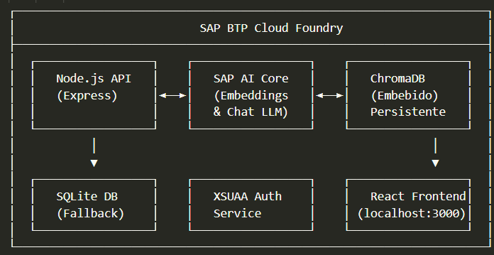
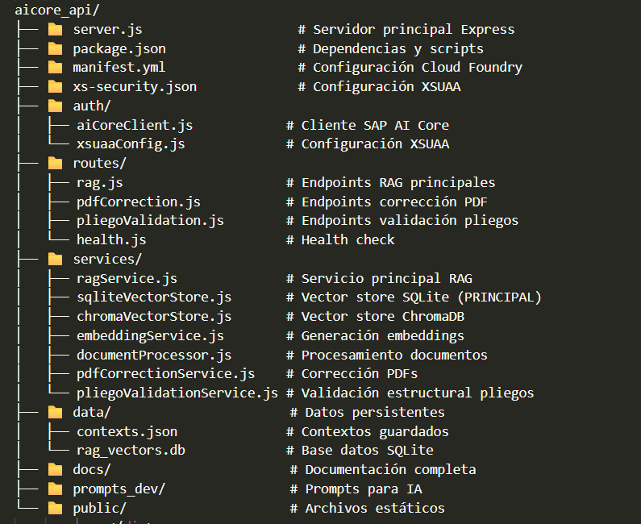

🎯 Resumen
Descripción del Proyecto
El Sistema RAG (Retrieval-Augmented Generation) es una solución completa que integra SAP AI Core con ChromaDB para proporcionar capacidades avanzadas de búsqueda semántica y chat conversacional basado en documentos corporativos.
Características Principales
✅ Integración completa con SAP AI Core para embeddings y generación de texto
✅ ChromaDB embebido para persistencia vectorial en Cloud Foundry
✅ Procesamiento multi-formato: TXT, DOCX, MD, JSON, CSV, PDF, XLSX, XLS
✅ API REST completa con endpoints para gestión de documentos
✅ Chat conversacional usando contexto de documentos indexados
✅ Fallback automático a almacenamiento en memoria
✅ Autenticación XSUAA para entornos de producción
✅ Despliegue en Cloud Foundry con configuración automática
Beneficios del Negocio
📈 Acceso Inteligente a Información: Búsqueda semántica en documentos corporativos
🤖 Automatización de Consultas: Chat bot que responde basándose en documentación oficial
☁️ Escalabilidad: Arquitectura cloud-native en SAP BTP
🔒 Seguridad: Integración con XSUAA para control de acceso
🛠️ Mantenimiento Simplificado: Configuración automática y fallbacks
Componentes del Sistema
| Componente |
Propósito |
Tecnologías |
| Backend API |
Servidor principal con lógica de negocio |
Node.js, Express.js, ES6 Modules |
| Sistema RAG |
Búsqueda semántica y chat conversacional |
SAP AI Core, ChromaDB, Embeddings |
| Corrección PDFs |
Corrección ortográfica automática de documentos |
pdf-lib, pdfjs-dist, SAP AI Core |
| Validación Pliegos |
Análisis estructural de documentos SAP |
IA generativa, Patrones de validación |
| Frontend React |
Interfaz de usuario para gestión del sistema |
React, Axios, OAuth2 |
🏗️ Arquitectura del Sistema
Arquitectura General

Diagrama general de la arquitectura del sistema
Flujo de Datos
1. Ingesta de Documentos
Documento → Procesamiento → Chunking → Embeddings (SAP AI Core) → ChromaDB/SQLite
2. Búsqueda Semántica
Query → Embedding (SAP AI Core) → Búsqueda Vectorial (ChromaDB/SQLite) → Resultados Rankeados
3. Chat RAG
Pregunta → Búsqueda Contexto → Prompt + Contexto → LLM (SAP AI Core) → Respuesta
Estructura de Archivos del Backend

Jerarquía visual de las carpetas del backend
Componentes por Entorno
| Componente |
Desarrollo Local |
Cloud Foundry |
| Vector Store |
ChromaDB Python Service |
ChromaDB Embebido |
| Autenticación |
Deshabilitada |
XSUAA |
| Puerto |
4000 + 8001 |
Dinámico |
| Persistencia |
Archivos externos |
Archivos locales CF |
| Datos |
Upload manual |
Pre-cargados |
Dependencias Principales
{
"express": "^4.18.2",
"multer": "^1.4.5-lts.1",
"better-sqlite3": "^8.7.0",
"mammoth": "^1.6.0",
"xlsx": "^0.18.5",
"pdfjs-dist": "^4.0.379",
"pdf-lib": "^1.17.1",
"@sap/xssec": "^3.2.13",
"passport": "^0.6.0",
"cors": "^2.8.5",
"uuid": "^9.0.0"
}
⚙️ Instalación y Configuración
Prerequisitos
✅ Node.js 20.x o superior
✅ Python 3.8+ (para ChromaDB local)
✅ SAP BTP Account con AI Core habilitado
✅ CF CLI instalado (para despliegue)
Instalación Local
# 1. Clonar repositorio
git clone [repository-url]
cd aicore_api
# 2. Instalar dependencias
npm install
# 3. Configurar variables de entorno
cp default-env.json.example default-env.json
# Editar con credenciales SAP BTP
# 4. Iniciar ChromaDB local (opcional)
cd chroma_service
start_service.bat
# 5. En otra terminal, iniciar servidor
npm start
Variables de Entorno
| Variable |
Desarrollo |
Producción |
Descripción |
| NODE_ENV |
development |
production |
Entorno de ejecución |
| VECTOR_STORE_TYPE |
python |
chroma |
Tipo de almacén vectorial |
| PORT |
4000 |
CF_PORT |
Puerto del servidor |
| RAG_CHUNK_SIZE |
1000 |
1000 |
Tamaño de chunks |
| RAG_CHUNK_OVERLAP |
200 |
200 |
Solapamiento de chunks |
Configuración SAP AI Core
// auth/aiCoreClient.js
const AICORE_CONFIG = {
authUrl: process.env.AICORE_AUTH_URL,
clientId: process.env.AICORE_CLIENT_ID,
clientSecret: process.env.AICORE_CLIENT_SECRET,
resourceGroup: process.env.AICORE_RESOURCE_GROUP,
baseUrl: process.env.AICORE_BASE_URL
};
Despliegue en Cloud Foundry
Configuración manifest.yml
---
applications:
- name: ai_core_api
memory: 2048M
instances: 1
buildpacks:
- nodejs_buildpack
command: node server.js
services:
- aicore-app-auth
env:
NODE_ENV: production
VECTOR_STORE_TYPE: sqlite
Proceso de Despliegue
# 1. Login en Cloud Foundry
cf login -a https://api.cf.eu10-005.hana.ondemand.com
# 2. Configurar target
cf target -o "ORGANIZACION" -s "ESPACIO"
# 3. Desplegar aplicación
cf push
# 4. Verificar estado
cf apps
cf logs ai_core_api --recent
Scripts de Automatización
| Script |
Propósito |
Ubicación |
| start-local-development.bat |
Iniciar desarrollo completo |
Raíz del proyecto |
| deploy-backend.bat |
Desplegar backend a CF |
Raíz del proyecto |
| cleanup-project.bat |
Limpiar archivos temporales |
Backend |
| start-with-sqlite.bat |
Iniciar con SQLite |
Backend |
📡 API Reference
Base URLs
🌐 Desarrollo: http://localhost:4000
☁️ Producción: https://tu-app.cfapps.sap.hana.ondemand.com
Endpoints de Salud
GET /health
{
"status": "healthy",
"timestamp": "2024-10-08T12:30:00Z",
"environment": "production",
"vectorStore": "chroma"
}
GET /api/rag/health
{
"status": "healthy",
"message": "Sistema RAG funcionando correctamente",
"summary": {
"totalDocuments": 2,
"totalChunks": 15,
"embeddingDimension": 384,
"vectorStoreType": "chroma"
}
}
Gestión de Documentos
GET /api/rag/documents
Lista todos los documentos indexados con metadatos
POST /api/rag/upload
Sube y procesa un documento
Content-Type: multipart/form-data
Campos: document (file), tags (string), description (string)
DELETE /api/rag/documents/{documentId}
Elimina un documento específico del índice
Búsqueda y Chat
POST /api/rag/search
{
"query": "políticas de vacaciones",
"topK": 5,
"minSimilarity": 0.3,
"documentId": "opcional"
}
POST /api/rag/chat
{
"message": "¿Cuáles son las políticas de vacaciones?",
"maxTokens": 500,
"temperature": 0.7
}
Backup y Restauración
GET /api/rag/download-db
Descarga backup de base de datos SQLite
POST /api/rag/upload-db
Sube/restaura base de datos desde backup
Corrección de PDFs
POST /api/pdf-correction/generate-list
Genera PDF con lista de correcciones al final
POST /api/pdf-correction/apply-corrections
Aplica correcciones directamente al PDF preservando formato
Validación de Pliegos
POST /api/pliego-validation/validate
Valida pliego y genera informe de errores
POST /api/pliego-validation/validate-text
Valida texto directo de pliego
Gestión de Contextos
GET /api/rag/contexts
Lista todos los contextos disponibles
POST /api/rag/contexts
{
"name": "Documentos RRHH",
"description": "Políticas y procedimientos de recursos humanos"
}
DELETE /api/rag/contexts/{contextId}
Elimina un contexto y todos sus documentos
Gestión de Errores de Pliegos
GET /api/pdf-correction/errors/raw
Obtiene el JSON completo de errores de todos los pliegos
{
"success": true,
"database": {
"pliegos": [
{
"metadata": {
"pliegoId": "PLIEGO_123",
"fileName": "pliego.pdf",
"analyzedAt": "2025-11-17T09:35:36.804Z"
},
"criticalErrors": [...],
"warnings": [...],
"summary": {
"totalCriticalErrors": 4,
"totalWarnings": 5
}
}
]
},
"totalPliegos": 2
}
GET /api/pdf-correction/errors/download
Descarga el JSON de errores como archivo
GET /api/pdf-correction/errors/statistics
Obtiene estadísticas agregadas de todos los errores
{
"success": true,
"statistics": {
"totalPliegos": 2,
"totalCriticalErrors": 4,
"totalWarnings": 5,
"errorsByType": {
"ERROR_NUMERICO": 2,
"COMENTARIO_DESARROLLADOR": 4,
"TAG_SIN_REEMPLAZAR": 1
}
}
}
GET /api/pdf-correction/errors/by-date
Filtra errores por rango de fechas
Query params:
- dateIni: YYYY-MM-DD (fecha inicial)
- dateFin: YYYY-MM-DD (fecha final)
Ejemplo: /api/pdf-correction/errors/by-date?dateIni=2025-11-01&dateFin=2025-11-17
GET /api/pdf-correction/errors/by-date/{date}
Obtiene errores de una fecha específica
GET /api/pdf-correction/errors/grouped-by-date
Agrupa errores por fecha de análisis
Query params:
- dateIni: YYYY-MM-DD (opcional)
- dateFin: YYYY-MM-DD (opcional)
Respuesta:
{
"success": true,
"data": {
"2025-11-17": {
"pliegos": [...],
"totalCriticalErrors": 4,
"totalWarnings": 5
}
}
}
GET /api/pdf-correction/errors/by-type/{errorType}
Filtra errores por tipo específico
Ejemplo: /api/pdf-correction/errors/by-type/ERROR_NUMERICO
Tipos disponibles:
- ERROR_NUMERICO
- TAG_SIN_REEMPLAZAR
- COMENTARIO_DESARROLLADOR
- FORMATO_FECHA_ERRONEO
- CAMPO_SI_NO_DUPLICADO
- etc.
🔧 Funcionalidades Principales
1. Sistema RAG (Retrieval-Augmented Generation)
🔍 Búsqueda Semántica: Encuentra información relevante usando similitud de vectores
💬 Chat Conversacional: Responde preguntas basándose en documentos indexados
📚 Procesamiento Multi-formato: Soporte para TXT, DOCX, MD, JSON, CSV, PDF, XLSX, XLS
🎯 Chunking Inteligente: Divide documentos en fragmentos con solapamiento
🧠 Embeddings SAP AI Core: Generación de vectores usando modelos de SAP
💾 Persistencia Vectorial: ChromaDB embebido o SQLite como fallback
2. Corrección Ortográfica de PDFs
📄 Dos Enfoques: Lista de correcciones o aplicación directa
🎨 Preservación de Formato: Mantiene fuentes, colores y posiciones
🤖 IA Automática: Detecta errores usando SAP AI Core
🔧 Correcciones Manuales: Aplica cambios específicos
🖥️ Interfaz Web: Herramienta de prueba en /public/pdf-correction-test.html
3. Validación Estructural de Pliegos SAP
🏗️ 4 Tipos de Pliegos: Obra civil y edificación, abierto y simplificado
📋 Detección Automática: Identifica tipo y modalidad por nomenclatura
🚨 Errores Críticos: Tags SAP sin reemplazar, estructuras incorrectas
⚠️ Advertencias: Problemas que permiten continuar
✅ Sugerencias: Recomendaciones de mejora específicas
📊 Puntuación de Calidad: Evaluación 0-100 de la estructura
4. Gestión de Contextos RAG
📁 Organización Lógica: Agrupa documentos por tema o departamento
🎯 Búsqueda Filtrada: Limita consultas a contextos específicos
📈 Estadísticas: Conteo de documentos por contexto
🔄 Persistencia JSON: Contextos guardados en data/contexts.json
5. Sistema de Backup y Restauración
💾 Backup Automático: Descarga de base de datos SQLite
🔄 Restauración: Subida y validación de backups
📊 Información de BD: Estadísticas y estado de la base de datos
🛡️ Scripts Automatizados: Gestión programada de backups
6. Autenticación y Seguridad
🔐 XSUAA: Autenticación OAuth2 en producción
🚫 Deshabilitada en Desarrollo: Simplificación para testing
🛡️ Middleware de Autenticación: Protección de rutas sensibles
🔑 Tokens JWT: Gestión de sesiones seguras
7. Procesamiento de Documentos
| Formato |
Librería |
Características |
| TXT |
fs (Node.js) |
Texto plano, encoding UTF-8 |
| MD |
fs (Node.js) |
Markdown con conversión a texto |
| JSON |
JSON.parse |
Estructuras de datos, conversión a texto |
| CSV |
csv-parser |
Archivos tabulares, conversión a texto |
| DOCX |
mammoth |
Documentos Word, extracción de texto |
| PDF |
pdfjs-dist |
Documentos PDF, extracción de texto |
| XLSX/XLS |
xlsx |
Hojas de cálculo, conversión a texto |
8. Nomenclatura de Pliegos
Formato Estándar: {ID_PLIEGO}_plec_{TIPO}_{MODALIDAD}[_{CATEGORIA}]
Componentes:
🆔 ID_PLIEGO: CT####### (ej: CT1078146)
🏗️ TIPO: edificacio_obert, edificacio_simplificat, obra_civil_obert, obra_civil_simplificat
📋 MODALIDAD: amb_lots, sense_lots
📂 CATEGORIA: vacío (terminado), validacion, validate
Contextos RAG por Categoría:
📝 PLANTILLAS_BASE: Plantillas limpias para referencia
🏷️ PLANTILLAS_TAGS: Plantillas con marcadores SAP
✅ PLIEGOS_TERMINADOS_ENTRENAMIENTO: Pliegos perfectos para IA
🔍 DOCUMENTOS_VALIDACION: Pliegos para validar y corregir
💾 Sistema de Backup y Restauración
Descripción General
El sistema de backup proporciona una solución completa para proteger y restaurar la base de datos SQLite que almacena los vectores y metadatos del sistema RAG. Incluye compresión automática, gestión de backups antiguos y programación de backups periódicos.
Características del Sistema
💾 Backups Comprimidos: Compresión GZIP nivel 9 para ahorrar espacio
🔄 Restauración Segura: Crea backup de seguridad antes de restaurar
🗑️ Limpieza Automática: Mantiene solo los 10 backups más recientes
⏰ Backups Programados: Ejecución automática cada 24 horas
📊 Estadísticas Detalladas: Información sobre espacio usado y backups disponibles
🛡️ Validación Automática: Verifica integridad antes de operaciones
Arquitectura del Sistema
| Componente |
Ubicación |
Propósito |
| BackupService |
services/backupService.js |
Lógica principal de backup/restore |
| Base de Datos |
./data/rag_vectors.db |
BD SQLite con vectores y metadatos |
| Directorio Backups |
./data/backup/ |
Almacenamiento de archivos de backup |
| Endpoints API |
routes/rag.js |
Rutas REST para gestión de backups |
Funciones Principales
1. Crear Backup
// Crear backup comprimido (recomendado)
const backup = await backupService.createBackup(true);
// Crear backup sin comprimir
const backup = await backupService.createBackup(false);
// Respuesta:
{
success: true,
filename: "backup_2024-10-08T12-30-00-000Z.db.gz",
path: "./data/backup/backup_2024-10-08T12-30-00-000Z.db.gz",
size: 524288, // Tamaño comprimido
originalSize: 2097152, // Tamaño original
compressed: true,
timestamp: "2024-10-08T12:30:00.000Z"
}
2. Listar Backups
const backups = await backupService.listBackups();
// Respuesta (array ordenado por fecha):
[
{
filename: "backup_2024-10-08T12-30-00-000Z.db.gz",
path: "./data/backup/backup_2024-10-08T12-30-00-000Z.db.gz",
size: 524288,
sizeFormatted: "512 KB",
compressed: true,
created: "2024-10-08T12:30:00.000Z",
modified: "2024-10-08T12:30:00.000Z"
}
]
3. Restaurar Backup
// Restaurar desde un backup específico
const result = await backupService.restoreBackup('backup_2024-10-08T12-30-00-000Z.db.gz');
// El sistema automáticamente:
// 1. Crea backup de seguridad de la BD actual
// 2. Descomprime el backup (si está comprimido)
// 3. Restaura la base de datos
// 4. Valida la operación
// Respuesta:
{
success: true,
filename: "backup_2024-10-08T12-30-00-000Z.db.gz",
message: "Base de datos restaurada correctamente",
timestamp: "2024-10-08T12:35:00.000Z"
}
4. Eliminar Backup
const result = await backupService.deleteBackup('backup_2024-10-07T10-00-00-000Z.db.gz');
// Respuesta:
{
success: true,
filename: "backup_2024-10-07T10-00-00-000Z.db.gz",
message: "Backup eliminado correctamente"
}
5. Obtener Estadísticas
const stats = await backupService.getBackupStats();
// Respuesta:
{
totalBackups: 10,
compressedBackups: 8,
uncompressedBackups: 2,
totalSize: 5242880,
totalSizeFormatted: "5 MB",
maxBackups: 10,
oldestBackup: "2024-10-01T08:00:00.000Z",
newestBackup: "2024-10-08T12:30:00.000Z"
}
6. Programar Backups Automáticos
// En server.js o al inicializar la aplicación
import { backupService } from './services/backupService.js';
// Programar backups cada 24 horas (por defecto)
backupService.scheduleAutoBackup(24);
// O cada 12 horas
backupService.scheduleAutoBackup(12);
// El sistema ejecutará:
// - Backup inicial inmediato
// - Backups periódicos según el intervalo
// - Limpieza automática de backups antiguos
Endpoints API REST
POST /api/rag/backup/create
Crea un nuevo backup de la base de datos
// Request
{
"compress": true // opcional, default: true
}
// Response
{
"success": true,
"backup": {
"filename": "backup_2024-10-08T12-30-00-000Z.db.gz",
"size": 524288,
"compressed": true,
"timestamp": "2024-10-08T12:30:00.000Z"
}
}
GET /api/rag/backup/list
Lista todos los backups disponibles
// Response
{
"success": true,
"backups": [
{
"filename": "backup_2024-10-08T12-30-00-000Z.db.gz",
"size": 524288,
"sizeFormatted": "512 KB",
"compressed": true,
"created": "2024-10-08T12:30:00.000Z"
}
]
}
POST /api/rag/backup/restore
Restaura la base de datos desde un backup
// Request
{
"filename": "backup_2024-10-08T12-30-00-000Z.db.gz"
}
// Response
{
"success": true,
"message": "Base de datos restaurada correctamente",
"timestamp": "2024-10-08T12:35:00.000Z"
}
DELETE /api/rag/backup/delete/:filename
Elimina un backup específico
// Response
{
"success": true,
"message": "Backup eliminado correctamente"
}
GET /api/rag/backup/stats
Obtiene estadísticas del sistema de backups
// Response
{
"success": true,
"stats": {
"totalBackups": 10,
"compressedBackups": 8,
"totalSize": 5242880,
"totalSizeFormatted": "5 MB",
"maxBackups": 10
}
}
GET /api/rag/backup/download/:filename
Descarga un archivo de backup específico
// Descarga el archivo directamente
// Content-Type: application/gzip (si está comprimido)
// Content-Type: application/x-sqlite3 (si no está comprimido)
Compresión y Eficiencia
| Tamaño Original |
Tamaño Comprimido |
Ratio Compresión |
Ahorro |
| 10 MB |
2.5 MB |
75% |
7.5 MB |
| 50 MB |
12 MB |
76% |
38 MB |
| 100 MB |
23 MB |
77% |
77 MB |
💡 Recomendación: Siempre usar compresión (compress: true) para ahorrar espacio. La compresión GZIP nivel 9 proporciona excelentes ratios sin impacto significativo en rendimiento.
Mejores Prácticas
1. Frecuencia de Backups
⏰ Producción: Backups cada 24 horas (automáticos)
🔄 Desarrollo: Backups manuales antes de cambios importantes
📊 Alta Actividad: Backups cada 12 horas si hay muchas actualizaciones
2. Gestión de Almacenamiento
🗑️ Limpieza Automática: El sistema mantiene solo 10 backups (configurable)
💾 Backups Críticos: Descargar y almacenar externamente backups importantes
📦 Compresión: Siempre usar compresión para optimizar espacio
3. Proceso de Restauración
⚠️ IMPORTANTE: El sistema crea automáticamente un backup de seguridad antes de cada restauración. Esto previene pérdida de datos en caso de error.
// Proceso recomendado para restaurar:
// 1. Verificar backups disponibles
GET /api/rag/backup/list
// 2. Descargar backup actual (opcional, por seguridad)
GET /api/rag/backup/download/backup_actual.db.gz
// 3. Restaurar desde backup deseado
POST /api/rag/backup/restore
{
"filename": "backup_2024-10-08T12-30-00-000Z.db.gz"
}
// 4. Verificar que el sistema funciona correctamente
GET /api/rag/health
GET /api/rag/documents
4. Monitoreo y Alertas
// Script de monitoreo de backups (ejemplo)
const stats = await backupService.getBackupStats();
if (stats.totalBackups === 0) {
console.error('⚠️ ALERTA: No hay backups disponibles');
}
if (stats.totalSize > 100 * 1024 * 1024) { // 100 MB
console.warn('⚠️ ADVERTENCIA: Backups ocupan más de 100 MB');
}
const lastBackupAge = Date.now() - new Date(stats.newestBackup);
if (lastBackupAge > 48 * 60 * 60 * 1000) { // 48 horas
console.warn('⚠️ ADVERTENCIA: Último backup tiene más de 48 horas');
}
Configuración Avanzada
Personalizar Límite de Backups
// En backupService.js
class BackupService {
constructor() {
this.maxBackups = 10; // Cambiar este valor
}
}
// O configurar dinámicamente
backupService.maxBackups = 20; // Mantener 20 backups
Cambiar Ubicación de Backups
// En backupService.js
class BackupService {
constructor() {
this.backupDir = './data/backup'; // Cambiar ruta
}
}
Integración con Cloud Storage
// Ejemplo: Subir backup a AWS S3 después de crearlo
import AWS from 'aws-sdk';
const s3 = new AWS.S3();
const backup = await backupService.createBackup(true);
// Leer archivo de backup
const fileContent = await fs.readFile(backup.path);
// Subir a S3
await s3.putObject({
Bucket: 'my-backups',
Key: `rag-backups/${backup.filename}`,
Body: fileContent
}).promise();
console.log('✅ Backup subido a S3');
Troubleshooting de Backups
❌ Error: "Base de datos no encontrada"
Causa: El archivo rag_vectors.db no existe
Solución:
- Verificar que el sistema RAG se haya inicializado correctamente
- Comprobar ruta: ./data/rag_vectors.db
- Revisar permisos de escritura en directorio ./data/
❌ Error: "No se puede crear directorio de backups"
Causa: Permisos insuficientes
Solución:
- Verificar permisos del directorio ./data/
- Crear manualmente: mkdir -p ./data/backup
- En Cloud Foundry: verificar que el directorio sea escribible
❌ Error: "Backup corrupto al restaurar"
Causa: Archivo de backup dañado
Solución:
- Intentar con otro backup más antiguo
- Verificar integridad del archivo con: gzip -t backup.db.gz
- El sistema habrá creado un backup de seguridad antes de fallar
Logs del Sistema de Backup
[BACKUP] ✅ Directorio de backups inicializado
[BACKUP] 📦 Compresión: 75.50% (2097152 → 524288 bytes)
[BACKUP] ✅ Backup creado: backup_2024-10-08T12-30-00-000Z.db.gz (0.50 MB)
[BACKUP] 🗑️ Backup antiguo eliminado: backup_2024-09-30T08-00-00-000Z.db.gz
[BACKUP] 🧹 2 backups antiguos eliminados
[BACKUP] ⏰ Backups automáticos programados cada 24 horas
[BACKUP] 📦 Creando backup de seguridad antes de restaurar...
[BACKUP] ✅ Base de datos restaurada desde: backup_2024-10-08T12-30-00-000Z.db.gz
📊 Sistema de Logs
¿Por qué un Sistema de Logs Propio?
⚠️ Problema con Cloud Foundry Logs:
Los logs de Cloud Foundry (cf logs) son extremadamente difíciles de leer y analizar:
- ❌ Formato poco legible con timestamps complejos
- ❌ Mezcla de logs de sistema y aplicación
- ❌ Difícil búsqueda y filtrado
- ❌ No se pueden descargar fácilmente
- ❌ Se pierden cuando se reinicia la app
✅ Solución: Sistema de logging propio que escribe en archivo y permite descarga en formato Markdown limpio y organizado.
Características del Sistema
✅ Doble escritura: Logs en consola (Cloud Foundry) y archivo local
✅ Rotación automática: Cuando el archivo supera 5MB
✅ Formato Markdown: Descarga organizada y legible
✅ Timestamps precisos: ISO 8601 en cada entrada
✅ Niveles de log: INFO, ERROR, WARN, DEBUG, SUCCESS
✅ Datos estructurados: JSON embebido para debugging
✅ Estadísticas: Tamaño, líneas, última modificación
Endpoints Disponibles
1. Ver Logs (JSON)
GET /api/logs
# Respuesta
{
"success": true,
"logs": "[2025-11-18T07:00:00.000Z] [INFO] [RAG-SERVICE] Documento procesado..."
}
2. Descargar Logs (Markdown)
GET /api/logs/download
# Descarga archivo: aicore_api_logs_1731916800000.md
# Formato Markdown limpio y organizado
3. Estadísticas de Logs
GET /api/logs/stats
# Respuesta
{
"success": true,
"stats": {
"size": 524288,
"sizeFormatted": "512.00 KB",
"lines": 1250,
"lastModified": "2025-11-18T07:30:00.000Z",
"path": "/home/vcap/app/logs/app.log"
}
}
4. Limpiar Logs
DELETE /api/logs
# Respuesta
{
"success": true,
"message": "Logs limpiados correctamente"
}
Uso en Código
import logger from './services/loggerService.js';
// Diferentes niveles de log
logger.info('MODULE-NAME', 'Operación iniciada');
logger.success('MODULE-NAME', 'Operación completada');
logger.warn('MODULE-NAME', 'Advertencia detectada');
logger.error('MODULE-NAME', 'Error crítico', { error: error.message });
logger.debug('MODULE-NAME', 'Info de debug', { data: someData });
// Ejemplo real
logger.info('RAG-SERVICE', 'Procesando documento', {
filename: 'pliego.pdf',
size: 1024000,
contextId: 'abc-123'
});
Formato de Salida (Markdown)
# 📋 Logs de AI Core API
**Generado:** 2025-11-18T07:30:00.000Z
---
```log
[2025-11-18T07:00:00.000Z] [INFO] [RAG-SERVICE] Documento procesado
{
"filename": "pliego.pdf",
"chunks": 45,
"contextId": "abc-123"
}
[2025-11-18T07:01:00.000Z] [SUCCESS] [BACKUP] Backup creado correctamente
[2025-11-18T07:02:00.000Z] [ERROR] [PDF-SERVICE] Error procesando PDF
{
"error": "Invalid PDF structure",
"file": "documento.pdf"
}
```
Comandos Útiles
# Descargar logs de producción
curl https://ai-core-api.cfapps.eu10-005.hana.ondemand.com/api/logs/download \
-o aicore_logs_$(date +%Y%m%d).md
# Ver estadísticas
curl https://ai-core-api.cfapps.eu10-005.hana.ondemand.com/api/logs/stats
# Limpiar logs (requiere autenticación en producción)
curl -X DELETE https://ai-core-api.cfapps.eu10-005.hana.ondemand.com/api/logs
# Ver logs en tiempo real (Cloud Foundry - menos legible)
cf logs ai-core-api --recent
Rotación de Logs
El sistema rota automáticamente los logs cuando el archivo supera 5MB:
# Archivo actual
logs/app.log (4.8 MB)
# Cuando supera 5MB, se renombra:
logs/app_2025-11-18T07-30-00-000Z.log (5.2 MB)
# Y se crea uno nuevo:
logs/app.log (0 KB)
Ventajas vs Cloud Foundry Logs
| Característica |
Cloud Foundry Logs |
Sistema Propio |
| Formato |
❌ Complejo y difícil de leer |
✅ Markdown limpio |
| Descarga |
❌ No disponible |
✅ Endpoint directo |
| Búsqueda |
❌ Limitada |
✅ Archivo de texto plano |
| Persistencia |
❌ Se pierden al reiniciar |
✅ Guardados en archivo |
| Estructura |
❌ Mezclado con logs de sistema |
✅ Solo logs de aplicación |
| Timestamps |
❌ Formato complejo |
✅ ISO 8601 estándar |
📖 Guías de Uso
Subida y Procesamiento de Documentos
# Via API REST
curl -X POST http://localhost:4000/api/rag/upload \
-F "document=@documento.pdf" \
-F "tags=politicas,empresa" \
-F "description=Políticas corporativas"
# Via interfaz web (si existe)
# Abrir http://localhost:4000/public/upload.html
Búsqueda Semántica
# Búsqueda general
curl -X POST http://localhost:4000/api/rag/search \
-H "Content-Type: application/json" \
-d '{
"query": "trabajo remoto desde casa",
"topK": 3,
"minSimilarity": 0.4
}'
# Búsqueda en documento específico
curl -X POST http://localhost:4000/api/rag/search \
-H "Content-Type: application/json" \
-d '{
"query": "beneficios empleados",
"topK": 5,
"documentId": "doc_123"
}'
Chat Conversacional RAG
# Pregunta simple
curl -X POST http://localhost:4000/api/rag/chat \
-H "Content-Type: application/json" \
-d '{
"message": "¿Cuáles son las políticas de vacaciones?"
}'
# Pregunta compleja
curl -X POST http://localhost:4000/api/rag/chat \
-H "Content-Type: application/json" \
-d '{
"message": "Compara las políticas de trabajo remoto con las de vacaciones",
"maxTokens": 700,
"temperature": 0.6
}'
Corrección de PDFs
Generar Lista de Correcciones:
curl -X POST http://localhost:4000/api/pdf-correction/generate-list \
-F "pdf=@documento.pdf"
# Resultado: PDF con lista de correcciones al final
Aplicar Correcciones Directas:
curl -X POST http://localhost:4000/api/pdf-correction/apply-corrections \
-F "pdf=@documento.pdf" \
-F "corrections=• tanbien -> también
• recivir -> recibir
• Dokumento -> Documento"
# Resultado: PDF corregido con formato preservado
Validación de Pliegos
# Validar pliego completo
curl -X POST http://localhost:4000/api/pliego-validation/validate \
-F "file=@pliego.pdf"
# Validar con contexto RAG adicional
curl -X POST http://localhost:4000/api/pliego-validation/validate \
-F "file=@pliego.pdf" \
-F "contextId=DOCUMENTOS_VALIDACION"
# Validar texto directo
curl -X POST http://localhost:4000/api/pliego-validation/validate-text \
-H "Content-Type: application/json" \
-d '{
"text": "Contenido del pliego...",
"filename": "CT1078146_plec_edificacio_obert_amb_lots.pdf"
}'
Gestión de Contextos
# Listar contextos
curl http://localhost:4000/api/rag/contexts
# Crear contexto
curl -X POST http://localhost:4000/api/rag/contexts \
-H "Content-Type: application/json" \
-d '{
"name": "Documentos Legales",
"description": "Contratos y documentos legales"
}'
# Eliminar contexto
curl -X DELETE http://localhost:4000/api/rag/contexts/{contextId}
Backup y Restauración
# Descargar backup
curl -o backup.db http://localhost:4000/api/rag/download-db
# Información de base de datos
curl http://localhost:4000/api/rag/db-info
# Subir/restaurar backup
curl -X POST http://localhost:4000/api/rag/upload-db \
-F "database=@backup.db"
Interfaz Web de Prueba
🌐 Corrección PDFs: http://localhost:4000/public/pdf-correction-test.html
📊 Dashboard Analytics: http://localhost:4000/analytics (si implementado)
⚛️ Frontend React: http://localhost:3000 (proyecto separado)
🚨 Troubleshooting
Problemas Comunes
❌ Error: "ChromaDB no disponible"
Síntomas: Logs muestran fallback a memoria
Solución:
- Verificar configuración VECTOR_STORE_TYPE
- En local: iniciar chroma_service/start_service.bat
- En CF: verificar que ChromaDB embebido se inicialice
❌ Error: "SAP AI Core no responde"
Síntomas: Timeouts en generación de embeddings
Solución:
- Verificar credenciales en default-env.json
- Comprobar servicios bindeados: cf services
- Verificar conectividad de red
❌ Error: "Memory limit exceeded"
Síntomas: Aplicación se reinicia frecuentemente
Solución:
memory: 1G
O via CLI: cf scale ai_core_api -m 1G
❌ Error: "No documents found"
Síntomas: Búsquedas no devuelven resultados
Solución:
- Verificar que documentos se cargaron: GET /api/rag/documents
- Revisar logs de inicialización
- Re-ejecutar ingesta: node scripts/ingest-documents.js
Códigos de Error
| Código |
Descripción |
Solución |
| 500 |
Error interno del servidor |
Revisar logs detallados |
| 503 |
Servicio no disponible |
Verificar dependencias |
| 400 |
Request malformado |
Validar formato JSON |
| 404 |
Documento no encontrado |
Verificar ID del documento |
| 413 |
Archivo demasiado grande |
Reducir tamaño o aumentar límites |
Herramientas de Diagnóstico
# Script de diagnóstico
node tests/test_python_chroma.js > diagnostic.log 2>&1
# Verificación de servicios
curl https://app-url/health
curl https://app-url/api/rag/health
curl https://app-url/api/rag/stats
Logs del Sistema
📝 Cloud Foundry: cf logs ai_core_api
💻 Local: Consola del servidor
🏷️
Tipos de Logs:
- [RAG] - Operaciones del sistema RAG
- [CHROMA] - Operaciones ChromaDB
- [EMBED] - Generación de embeddings
- [DOC] - Procesamiento de documentos
- [API] - Requests HTTP
Comandos de Monitoreo
# Cloud Foundry
cf app ai_core_api
cf logs ai_core_api --recent
cf events ai_core_api
# Health checks automáticos
while true; do
curl -f https://tu-app.cfapps.sap.hana.ondemand.com/health || echo "ALERT: App down"
sleep 60
done